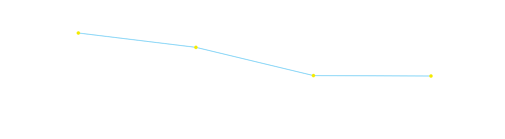

중고 거래 경험자의
51.2%가 구매 시 불안을 느꼈습니다.
구매 시
불안 경험
가격 매력만으로는
결정하기 어려움
품질·상태
불확실성
보이지 않는 결함을
예측하기 어려움
상대방에 대한
신뢰 부족
거래 책임 주체를
확인하기 어려움
중고 거래의 기본은 신뢰였습니다.
그 신뢰를 지키기 위해 고객의 불안부터 확인했습니다.
요청받은 업무는 인증 중고 서비스 UX 설계였습니다. 하지만 바로 화면을 만들지 않고, 사람들이 무엇을 불안해하고 어떤 조건에서 안심하는지부터 확인했습니다.
새 제품과 달리 중고 제품은 실제 상태, 사용 이력, 구매 이후 책임이 보이지 않을수록 판단이 멈췄습니다.
탐색을 시작하게 만드는 이유와 구매를 멈추게 하는 이유를 분리해 보면서, 가격보다 신뢰의 근거가 결정을 좌우한다는 사실을 확인했습니다.
가격 매력만으로는
결정하기 어려움
보이지 않는 결함을
예측하기 어려움
거래 책임 주체를
확인하기 어려움
탐색을 시작하게 한
가장 큰 동기
공인 주체가
상태를 확인
구매 이후까지
책임을 연결
가격과 가성비는 탐색을 만들었지만, 신뢰할 근거가 없으면 구매로 이어지지 않았습니다.
중고 거래의 기준을 상품 탐색과 가격 비교에만 두지 않고, 제품 상태·상품화 과정·검수 기준·구매 후 책임까지 이어지는 경험으로 다시 정의했습니다.
중고를 찾는 이유는 저렴한 가격 56.7%와 높은 가성비 79.1%에 집중됐습니다. 그러나 구매 단계에서는 51.2%가 불안을 경험했습니다.
신제품보다 높은 가성비가 중고 제품을 찾아보게 만들었습니다.
상태와 책임을 확인하지 못하면 가격의 매력은 마지막 단계에서 약해졌습니다.
외관·기능 상태 50.8%, 금전적 사기 44.6%, 위조품 유통 37.7%, 오염·위생 34.6%, 고장 후 A/S·반품 불가 31.1%. 숫자가 높은 걱정부터 콘텐츠와 정책의 기준으로 옮겼습니다.

상품 정보, 검수 기준, 콘텐츠 품질, 브랜드 책임, 구매 후 케어를 하나의 구조로 묶어 고객이 스스로 확인할 수 있게 했습니다.
실물 이미지와 상태 등급으로 추측을 줄입니다.
외관 · 기능 · 사용 연식엔지니어 진단과 상품화 과정을 확인하게 합니다.
검품 리포트 · 세척 · 살균배송·설치와 보증을 결제 순간부터 연결합니다.
안전 결제 · 2년 무상 A/S온라인에서 고객이 확인할 수 있는 것은 결국 이미지와 영상, 그리고 그 콘텐츠가 만들어진 기준이었습니다. 그래서 상품을 보여주는 방식부터 다시 설계했습니다.
직접 볼 수 없는 중고 가전에서 이미지는 고객이 실제 제품을 판단하는 첫 번째 실물이었습니다. 고객 조사에서 상품 이미지가 구매 판단에 영향을 준다는 응답은 80% 이상으로 나타났습니다.
제품을 직접 볼 수 없는 온라인에서 사진은 상태를 확인하는 첫 번째 근거가 됩니다.
몇 장의 이미지에서 벗어나 제품 전체를 확인할 수 있는 경험으로 확장했습니다.
파주 스튜디오 구축 단계부터 공간, 카메라, 조명, 앵글, 콘텐츠 구성을 하나의 제작 기준으로 정리했습니다.
제품이 가려지지 않고 모든 면을 확인할 수 있는 공간 기준을 세웠습니다.
공간 · 동선 · 배경대형 가전의 비례와 외관이 실제와 다르게 보이지 않도록 촬영 기준을 만들었습니다.
렌즈 · 거리 · 정대칭작은 스크래치와 찍힘까지 숨김없이 드러나는 확산광 환경을 구축했습니다.
조도 · 색온도 · 그림자AI를 제작 효율이 아니라 고객이 궁금하지만 카메라로 보여주기 어려운 내부 구조와 세척 과정을 설명하는 도구로 사용했습니다.
상태·내부 구조·세척 과정에서 고객 질문을 추렸습니다.
현장 촬영과 엔지니어 데이터를 우선 기준으로 삼았습니다.
촬영이 어려운 영역만 사실 기반 그래픽으로 보완했습니다.
실제 공정과 어긋나는 연출은 제거하고 정보로 남겼습니다.
고객이 불안해지는 순간마다 필요한 근거를 먼저 배치했습니다. 탐색·상세·구매·케어를 하나의 여정으로 연결하고 화면마다 역할을 분명히 했습니다.
인증 뱃지·상태 등급·가격으로 탐색의 이유를 만듭니다.
실물 이미지·상품화 과정·이전 소유자 코멘트를 보여줍니다.
보증·환불·설치·수거 조건을 결제 전에 확정합니다.
2년 무상 A/S와 전문 배송·설치로 관계를 이어갑니다.
대형 가전에서 중고 모바일까지 카테고리가 확장되어도 같은 품질을 유지하도록 매장용 촬영·상품화 기준을 만들었습니다.
분해 세척과 스팀 살균, 전문 설치가 필요한 대형 가전의 공정을 표준화했습니다.
냉장 · 세탁 · 건조 · 의류관리전국 매장에서도 조도·구도·필수 이미지를 일관되게 만들도록 가이드를 배포했습니다.
라이트 텐트 · 플리커 · 번인모바일 개인정보 삭제 인증을 상세페이지의 신뢰 정보로 연결했습니다.
영구 삭제 · 인증서 연동문제 정의에서 시작해 신뢰 전략, 콘텐츠 제작 기준, 구매 UX, 확장 가능한 운영 체계까지 빠르게 프로토타입으로 만들고 내부 검증을 반복했습니다.
고객은 중고 제품을 원하지 않는 것이 아니라, 믿을 수 있는 이유가 부족했습니다. 상품·콘텐츠·정책·구매 경험 전체를 연결해 하이마트만의 신뢰 기반 중고 경험을 설계했습니다.